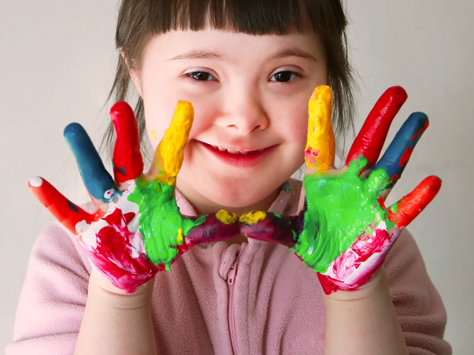
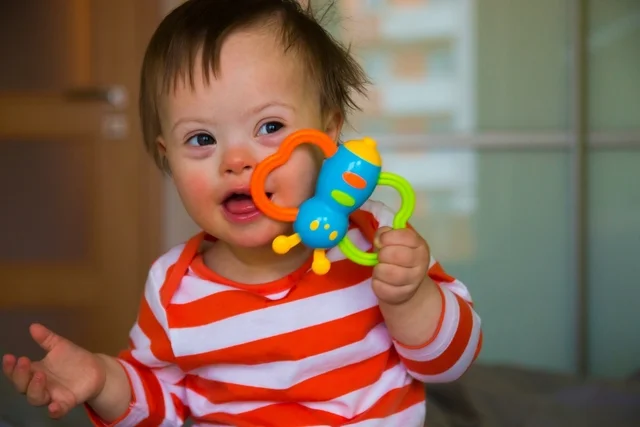
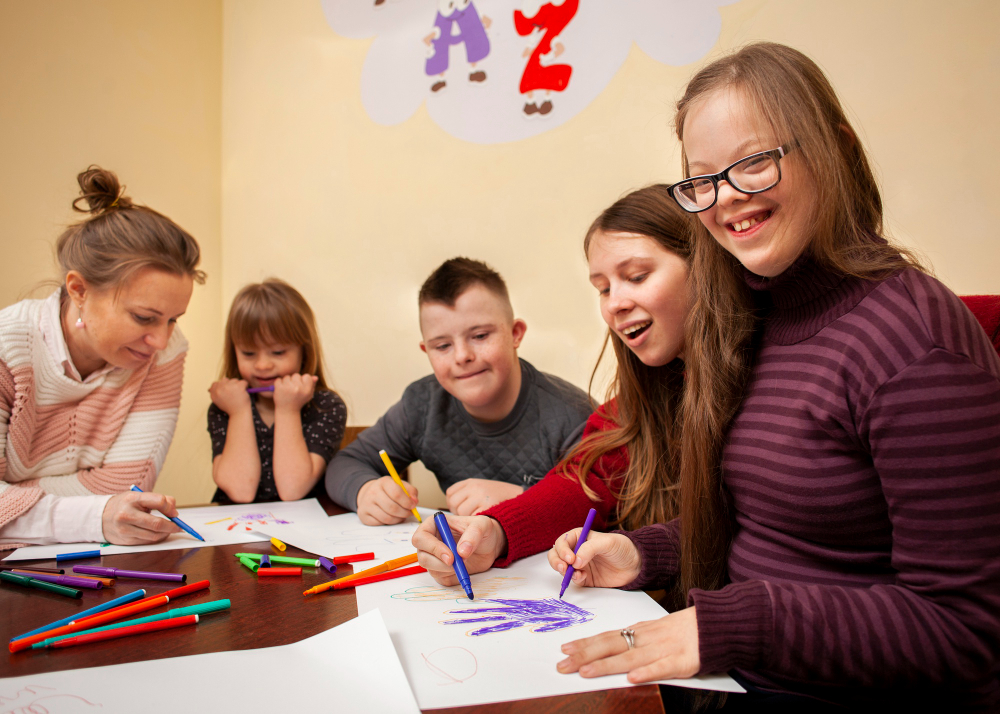
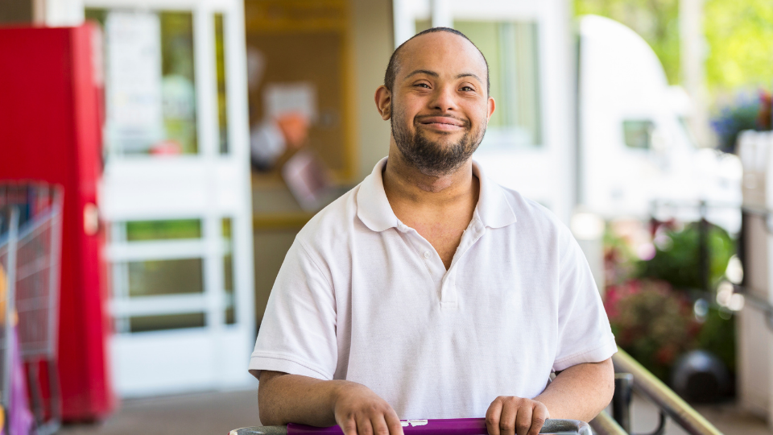
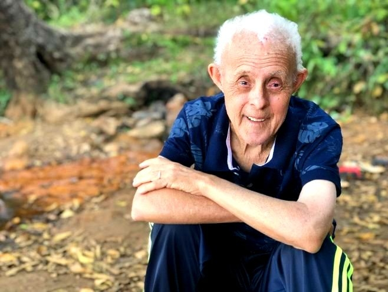
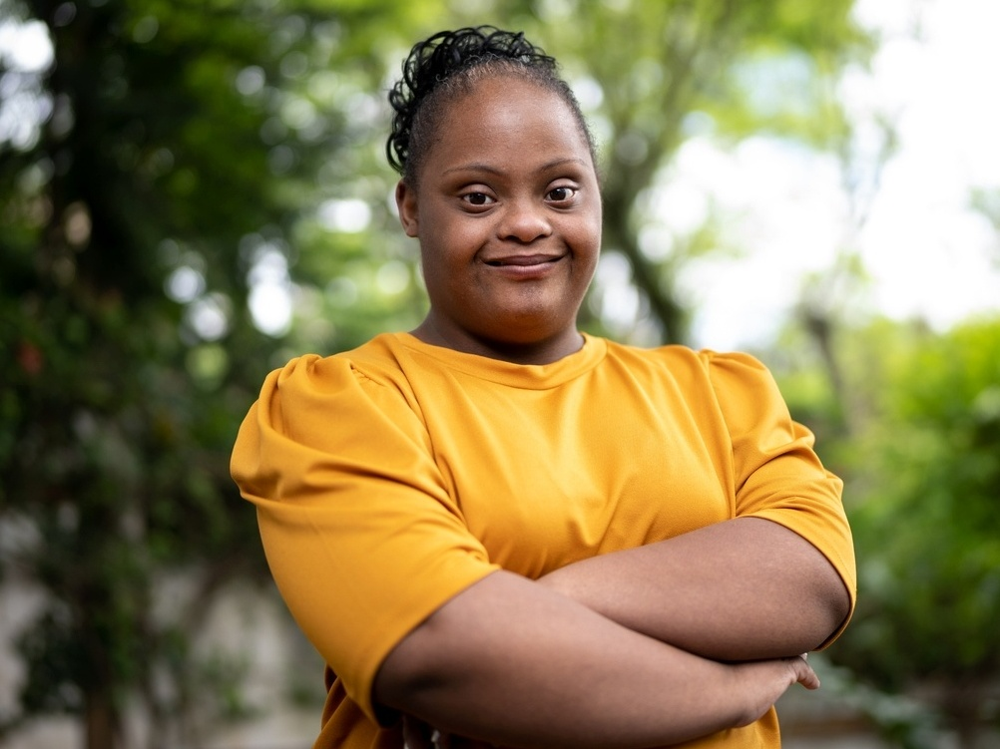

História
A síndrome de Down é uma alteração genética presente na espécie humana desde sua origem. Foi descrita como tal há 150 anos, quando John Langdon Down, em 1866, se referiu a ela pela primeira vez como um quadro clínico com identidade própria. Desde então tem-se avançado em seu conhecimento, ainda que existam mecanismos íntimos a descobrir. Em 1958, o francês Jérôme Lejeune e a inglesa Pat Jacobs descobriram de maneira independente a origem cromossômica da síndrome. Foi quando ela passou a ser considerada uma síndrome genética.
A síndrome de Down é a primeira causa conhecida de incapacidade intelectual, representando aproximadamente 25% de todos os casos de atraso intelectual, traço presente em todas as pessoas com a síndrome.
O que é ?
Esta condição geralmente acontece ao acaso. Na maioria das vezes, por algum motivo que ainda desconhecemos, o óvulo ou o espermatozoide carrega um cromossomo 21 a mais e aí, na hora que eles se juntam e formam o embrião, o bebê nasce com 47 cromossomos em suas células. Esta é a forma mais comum de ter SD (aproximadamente em 95% dos casos) e é chamada de Trissomia simples ou livre. As outras formas (translocação e mosaicismo) são mais raras. O exame que dá a certeza do diagnóstico é o cariótipo e pode ser realizado durante a gestação (quando analisamos as células do feto) ou após o bebê nascer, quando a análise é feita nas células do sangue.
A Síndrome de Down é uma condição genética causada pela presença de um cromossomo 21 extra. Isso pode acontecer de três maneiras:
• Trissomia 21: a pessoa tem 47 cromossomos no total, em vez de 46.
• Translocação: um pedaço do cromossomo 21 se liga a outro cromossomo.
• Mosaicismo: algumas células do corpo têm 46 cromossomos e outras 47.
Orientação de tratamento
O tratamento da Síndrome de Down é focado no desenvolvimento pleno da pessoa, com acompanhamento multidisciplinar, incluindo:
• Fisioterapia: para fortalecer músculos e melhorar a coordenação motora.
• Fonoaudiologia: para auxiliar no desenvolvimento da fala e da linguagem.
• Terapia ocupacional: para desenvolver habilidades motoras finas e de autonomia.
• Psicologia: para auxiliar no desenvolvimento emocional e social.
• Educação especial: para garantir o acesso à educação e ao aprendizado.
Principais características
As pessoas com Síndrome de Down podem apresentar algumas características físicas em comum, como:
• Olhos oblíquos e orelhas pequenas.
• Fissura palpebral oblíqua.
• Língua grande e protrusão da língua.
• Hipotonia (baixo tônus muscular).
• Mãos e pés pequenos.
• Prega palmar única.
Cuidados e orientações
Bebê - Idade: Zero - 1 ano

Exames:
• Exame para ver como está a tireoide;
• Hemograma para ver as células do sangue;
• Cariótipo para ver os cromossomos;
• Caso necessário, fazer ecocardiograma para ver a imagem do corção;
• Exame de olhos;
• Exame de ouvidos;
Orientações:
• Estimular movimentos do corpo;
• Cuidar da posição do pescoço;
• Ser amamentado;
• Tomar vacinas.
Criança - Idade: 1 - 11 anos
Exames:
• Exame para ver como está a tireoide;
• Hemograma pra ver as céculas do sangue;
• Caso necessário, fazer ecocardiograma para ver a imagem do coração;
• Exame de olhos;
• Exame de ouvidos;
• Raio X da coluna
Orientações:
• Cuidar da posição do pescoço;
• Fazer atividade física;
• Ter uma alimentação saudável
• Estudar;
• Tomar vacinas;
• Estar em contato com outras pessoas;
• Tentar fazer sozinho tudo que for possível.
Adolescente - Idade: 12 - 18 anos

Exames:
• Exame para ver como está a tireoide;
• Hemograma pra ver as céculas do sangue;
• Caso necessário, fazer ecocardiograma para ver a imagem do coração;
• Exame de olhos;
• Exame de ouvidos;
• Raio X da coluna
• Exames para ver a quantidade de açúcar e gorduras no sangue;
• Na mulher, fazer exame ginecológico.
Orientações:
• Cuidar da posição do pescoço;
• Fazer atividade física;
• Ter uma alimentação saudável
• Estudar;
• Tentar fazer sozinho tudo que for possível.
• Observar se está dormindo bem (Pode estar ocorrendo apneia do sono);
• Ter cuidados para não engravidar ou pegar doenças que são transmitidas ao fazer sexo;
• Ficar atento a abusos sexuais.
Adulto - Idade: 19 - 40 anos

Exames:
• Exame para ver como está a tireoide;
• Hemograma pra ver as céculas do sangue;
• Caso necessário, fazer ecocardiograma para ver a imagem do coração;
• Exame de olhos;
• Exame de ouvidos;
• Raio X da coluna
• Exames para ver a quantidade de açúcar e gorduras no sangue;
• Na mulher, fazer exame ginecológico.
Orientações:
• Cuidar da posição do pescoço;
• Fazer atividade física;
• Ter uma alimentação saudável
• Trabalhar;
• Tentar fazer sozinho tudo que for possível.
• Observar se está dormindo bem (Pode estar ocorrendo apneia do sono);
• Ter cuidados para não engravidar ou pegar doenças que são transmitidas ao fazer sexo;
Idoso - Idade: 40 anos e mais velhos

Exames:
• Exame para ver como está a tireoide;
• Hemograma pra ver as céculas do sangue;
• Caso necessário, fazer ecocardiograma para ver a imagem do coração;
• Exame de olhos;
• Exame de ouvidos;
• Raio X da coluna
• Exames para ver a quantidade de açúcar e gorduras no sangue;
Orientações:
• Cuidar da posição do pescoço;
• Fazer atividade física;
• Ter uma alimentação saudável
• Trabalhar;
• Tentar fazer sozinho tudo que for possível.
• Observar se está dormindo bem (Pode estar ocorrendo apneia do sono);
• Observar se você está esquecendo muitas coisas.
Benefícios dos Exercícios e Brincadeiras
Melhora a saúde física: Fortalece músculos e ossos, aumenta a flexibilidade, coordenação e resistência, melhora o equilíbrio e a postura, ajuda a controlar o peso e reduz o risco de doenças crônicas como doenças cardíacas, diabetes e osteoporose.
Promove o desenvolvimento cognitivo: Estimula o aprendizado, a memória, a atenção e a resolução de problemas.
Melhora a saúde mental: Reduz o estresse, a ansiedade e a depressão, aumenta a autoestima e a confiança, promove o bem-estar emocional e social.
Desenvolve habilidades sociais: Estimula a interação com outras pessoas, o trabalho em equipe e a comunicação.
Aumenta a independência: Fortalece as habilidades motoras finas e grossas, o que pode ajudar nas atividades da vida diária.
Recomendações por Idade:
Crianças:
0-2 anos: Brincadeiras sensoriais, exploração do ambiente, atividades motoras básicas como engatinhar e andar.
2-5 anos: Brincadeiras com bola, jogos de construção, atividades de dança e música, natação.
5-12 anos: Esportes individuais e em equipe, atividades ao ar livre, brincadeiras criativas e imaginativas.
Adolescentes:
12-18 anos: Esportes competitivos, atividades de fitness, yoga, artes marciais, programas de treinamento de força e resistência.
Adultos:
19-64 anos: Exercícios aeróbicos, atividades de força, alongamentos, yoga, pilates, dança, esportes adaptados.
Idosos:
65+ anos: Caminhadas, exercícios aquáticos, tai chi, atividades de baixo impacto que promovam a flexibilidade e o equilíbrio.
Orientações Gerais:
Consulta médica: É importante consultar um médico antes de iniciar qualquer programa de exercícios ou brincadeiras, especialmente para pessoas com SD que podem ter condições de saúde específicas.
Individualização: As atividades devem ser escolhidas de acordo com as habilidades, interesses e nível de condicionamento físico da pessoa.
Progressão gradual:Comece com exercícios e brincadeiras de menor intensidade e aumente gradualmente a duração e a dificuldade à medida que a pessoa se fortalece.
Diversão: O mais importante é que a pessoa se divirta e se sinta motivada a participar das atividades.
Suporte e incentivo: É importante oferecer apoio e incentivo à pessoa com SD, ajudando-a a superar desafios e alcançar seus objetivos.
Planejamento de Rotina para Pessoas com Síndrome de Down
Observação importante: Este plano de rotina é apenas um exemplo e deve ser adaptado às necessidades e preferências individuais de cada pessoa com Síndrome de Down. É fundamental consultar um médico ou outro profissional de saúde qualificado para obter orientação personalizada.
Manhã:
• 7h00: Acordar, levantar da cama e ir ao banheiro.
• 7h30: Higiene pessoal: escovar os dentes, lavar o rosto e pentear o cabelo.
• 8h00: Café da manhã: uma refeição nutritiva e balanceada.
• 8h30: Atividade física: exercícios leves, alongamentos ou caminhada.
• 9h30: Estimulação cognitiva: jogos, atividades de leitura ou escrita.
• 10h30: Atividade social: interação com familiares, amigos ou participação em grupos.
Tarde:
• 12h00: Almoço: uma refeição saudável e saborosa.
• 13h00: Descanso: cochilo, leitura ou tempo livre para relaxar.
• 14h00: Terapia ocupacional: atividades que desenvolvem habilidades motoras finas e grossas, coordenação e independência.
• 15h00: Fisioterapia: exercícios para fortalecer músculos, melhorar a flexibilidade e o equilíbrio.
• 16h00: Atividade ao ar livre: brincadeiras no parque, caminhada ou jardinagem.
Noite:
• 18h00: Jantar: uma refeição leve e nutritiva.
• 19h00: Atividade relaxante: banho, leitura ou música.
• 20h00: Preparação para dormir: vestir pijama, escovar os dentes e se deitar na cama.
• 21h00: Dormir: sono reparador e de qualidade.

Recomendações Adicionais:
Manter a rotina consistente: É importante seguir a rotina o máximo possível, mesmo nos finais de semana e feriados. Isso ajuda a criar um senso de previsibilidade e segurança para a pessoa com Síndrome de Down.
Flexibilidade: É importante ser flexível e adaptar a rotina às necessidades da pessoa. Se a pessoa estiver cansada ou com dor, por exemplo, pode ser necessário ajustar o horário das atividades.
Recompensas e incentivos: Utilize recompensas e incentivos positivos para motivar a pessoa a participar das atividades. Isso pode incluir elogios, adesivos, guloseimas ou atividades favoritas.
Comunicação: Mantenha uma comunicação aberta e honesta com a pessoa sobre a rotina. Explique o que vai acontecer a cada dia e responda às suas perguntas e preocupações.
Paciência e amor: Tenha paciência e amor com a pessoa durante todo o processo. Lembre-se que cada pessoa aprende e se desenvolve em seu próprio ritmo.